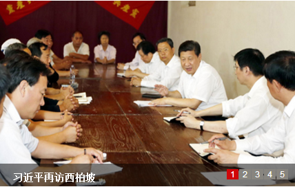

首页
西柏坡记忆
西柏坡人物
西柏坡文献
馆藏精品
文博天地
圣地风采
媒体报道
艺术西柏坡
党面临的赶考远未结束——习近平再访西柏坡侧记

西柏坡纪念馆召开2016年度工作总结表彰大会
强化“四个意识”弘扬赶考精神
弘扬“赶考”精神 不忘初心继续前行
省委理论学习中心组学习会强调强化“四个意识” 弘扬赶考精神
弘扬“赶考”精神 提高领导干部理论素养
石家庄砥砺前行：赶考路上我们不忘初心
奋力书写赶考路上的河北答卷
人民日报：永葆“赶考”的那份初心
电视剧《换了人间》开机仪式在西柏坡举行
西柏坡纪念馆召开学习贯彻省九次党代会精神辅导大会
《西柏坡纪念馆作风建设在路上》一书正式出版
西柏坡纪念馆2016年职工运动会圆满落幕
赵克志强调：牢记“两个务必” 践行“三严三实”
赵克志强调：牢记“两个务必” 践行“三严三实”
市委常委3.23集体西柏坡开展赶考活动
河南电视台12日晚播出《重温西柏坡精神》
西柏坡密电 毛泽东巧施空城计退敌十万兵
西柏坡密电 毛泽东巧施空城计退敌十万兵
西柏坡密电 粟裕挥师千里围歼黄百韬
较量：西柏坡1948纪事第二集
动画影片《西柏坡》
微电影《在你身边》
动画影片《西柏坡》
《中国1949》
西柏坡历史研究
“赶考”故事
西柏坡全国土地会议前后
西柏坡时期的党内政治生活
解读《关于请示报告制度的决议》
学风•文风•会风•家风
一篇党委工作方法论的光辉文献
西柏坡精神研究
弘扬“赶考”精神的时代意义
赶考，我们永远在路上
西柏坡时期党对规矩建设的探索与贡献
在弘扬西柏坡精神中交出更加优异的答卷
弘扬“赶考”精神 推进“四个全面”
“赶考”命题对破解“四种危险”的启迪
西柏坡红色旅游研究
整合、创新，推动红色旅游优化升级
创意经济视角下红色旅游产业化发展的思路研究
西柏坡品牌内核及其整合传播策略
西柏坡红色旅游可持续发展路径研究
创新红色旅游模式研究
西柏坡红色文化在打造河北文化强省中的优势和作用